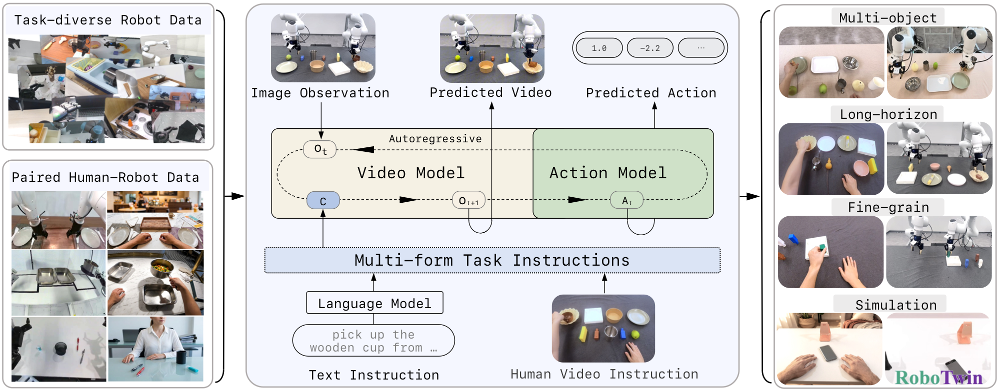
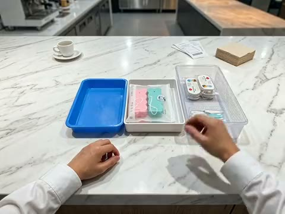

Task-diverse
Robot Data
Robot Data
Robotic policies deployed in the physical world must handle a broad range of manipulation tasks, including tasks outside their training distribution. This task-level distribution shift remains a central challenge in general-purpose manipulation. A straightforward way is to keep scaling manipulation data so that it covers as many tasks as possible. Yet real-world manipulation tasks are extraordinarily diverse, and language instructions alone often leave crucial procedural details ambiguous. This motivates a complementary visual interface that can ground an unseen task in a concrete demonstration.
Human demonstration videos provide such a visual interface by showing the intended interaction and its visual progression. Compared with language instructions, the examples below illustrate three complementary forms of visual task specification: grounding the intended object instance, demonstrating the required interaction with an unfamiliar object, and specifying the temporal order of a long-horizon task. Training a single policy to follow both language instructions and human video prompts strengthens its ability to generalize across manipulation tasks. Achieving this capability requires scaling semantically aligned human-robot ICL pairs. When language is insufficient, a relevant human demonstration found on the internet or provided on site can serve as an in-context prompt, allowing the policy to execute the specified task without task-specific robot demonstrations or parameter updates.
Identify the intended instance among visually similar objects.
To make this human-video ICL interface trainable at scale, we introduce Zero-WAM, an in-context world-action pre-training framework for zero-shot robotic task generalization.

Scaling the human-video ICL interface introduced above requires task-rich, semantically aligned human-robot pairs, which are expensive to collect manually. Robotic pre-training corpora already contain diverse trajectories with executable actions. We therefore sample tasks from these corpora, convert the corresponding robot videos into matched human demonstrations, and retain only physically plausible, task-consistent ICL pairs.

Zero-WAM pre-training uses two complementary data components. Task-diverse VA is constructed from five public datasets by repartitioning robot trajectories into more than 6,000 manipulation tasks and sampling them at the task level. The pipeline above constructs HumanGen, a collection of aligned human-robot ICL pairs spanning public datasets, in-house platforms, simulation, and real-world collection.
We evaluate Zero-WAM on long-horizon sequential manipulation and precision-demanding insertion. Both task families are difficult to specify fully in language: the former requires an exact execution order, while the latter depends on precise target configurations.
Place the silver coffee cup in the wooden basket. Place the sponge in the white tray. Place the gourd on the pink oval plate.
Move the white tabletop base to the left. Insert the green table leg into the bottom-right corner of the white tabletop, then insert the blue table leg into the top-left corner.
We evaluate Zero-WAM's cross-task generalization in the RoboTwin 2.0 simulation benchmark. Seven tasks are held out at the task level; Zero-WAM is trained on the remaining 43 tasks and evaluated zero-shot on the held-out set.
Across this held-out suite, Zero-WAM reaches 46.95% average success, surpassing the video-action baseline LingBot-VA by 29.50 percentage points.